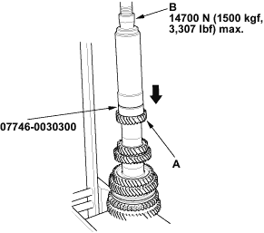
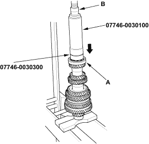
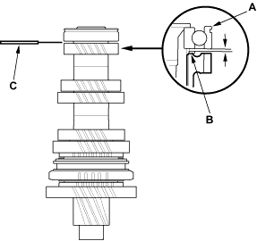

- Install 6th gear (A) using a special tools and a press (B).

- Install the 35 mm shim and the old ball bearing (A) using a special tools and a press (B).


- Measure the clearance between the old bearing (A) and the 35 mm shim (B) with a feeler gauge (C).
Standard:
0.04 - 0.10 mm (0.0157 - 0.0394 in.)
